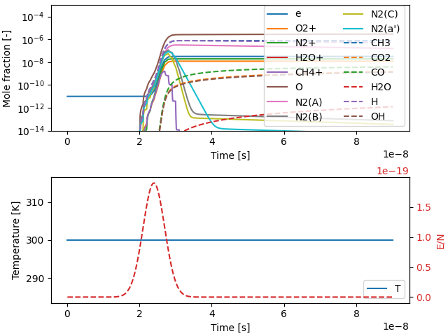

Note
Go to the end to download the full example code.
Nanosecond Pulse Plasma Simulation#
This example simulates a nanosecond-scale pulse discharge in a reactor. A Gaussian-shaped electric field pulse is applied over a short timescale. The plasma reaction mechanism used is based on Colin Pavan’s mechanism for methane-air plasmas which is described in his Ph.D. dissertation and the corresponding AIAA SciTech conference papers:
C. A. Pavan, “Nanosecond Pulsed Plasmas in Dynamic Combustion Environments,” Ph.D. Thesis, Massachusetts Institute of Technology, 2023. Chapter 5.
C. A. Pavan and C. Guerra-Garcia, “Modelling the Impact of a Repetitively Pulsed Nanosecond DBD Plasma on a Mesoscale Flame,” in AIAA SCITECH 2022 Forum, Reston, Virginia: American Institute of Aeronautics and Astronautics, Jan. 2022, pp. 1-15. DOI: 10.2514/6.2022-0975.
C. A. Pavan and C. Guerra-Garcia, “Modeling Flame Speed Modification by Nanosecond Pulsed Discharges to Inform Experimental Design,” in AIAA SCITECH 2023 Forum, Reston, Virginia: American Institute of Aeronautics and Astronautics, Jan. 2023, pp. 1-15. DOI: 10.2514/6.2023-2056.
Requires: cantera >= 3.2, matplotlib >= 2.0

t [s] T [K] P [Pa] h [J/kg]
1.000e-10 300.000 101325.000 -254430.994561
2.000e-10 300.000 101325.000 -254430.994561
3.000e-10 300.000 101325.000 -254430.994561
4.000e-10 300.000 101325.000 -254430.994561
5.000e-10 300.000 101325.000 -254430.994561
6.000e-10 300.000 101325.000 -254430.994561
7.000e-10 300.000 101325.000 -254430.994561
8.000e-10 300.000 101325.000 -254430.994561
9.000e-10 300.000 101325.000 -254430.994561
1.000e-09 300.000 101325.000 -254430.994561
1.100e-09 300.000 101325.000 -254430.994561
1.200e-09 300.000 101325.000 -254430.994561
1.300e-09 300.000 101325.000 -254430.994561
1.400e-09 300.000 101325.000 -254430.994561
1.500e-09 300.000 101325.000 -254430.994561
1.600e-09 300.000 101325.000 -254430.994561
1.700e-09 300.000 101325.000 -254430.994561
1.800e-09 300.000 101325.000 -254430.994561
1.900e-09 300.000 101325.000 -254430.994561
2.000e-09 300.000 101325.000 -254430.994561
2.100e-09 300.000 101325.000 -254430.994561
2.200e-09 300.000 101325.000 -254430.994561
2.300e-09 300.000 101325.000 -254430.994561
2.400e-09 300.000 101325.000 -254430.994561
2.500e-09 300.000 101325.000 -254430.994561
2.600e-09 300.000 101325.000 -254430.994561
2.700e-09 300.000 101325.000 -254430.994561
2.800e-09 300.000 101325.000 -254430.994561
2.900e-09 300.000 101325.000 -254430.994561
3.000e-09 300.000 101325.000 -254430.994561
3.100e-09 300.000 101325.000 -254430.994561
3.200e-09 300.000 101325.000 -254430.994561
3.300e-09 300.000 101325.000 -254430.994561
3.400e-09 300.000 101325.000 -254430.994561
3.500e-09 300.000 101325.000 -254430.994561
3.600e-09 300.000 101325.000 -254430.994561
3.700e-09 300.000 101325.000 -254430.994561
3.800e-09 300.000 101325.000 -254430.994561
3.900e-09 300.000 101325.000 -254430.994561
4.000e-09 300.000 101325.000 -254430.994561
4.100e-09 300.000 101325.000 -254430.994561
4.200e-09 300.000 101325.000 -254430.994561
4.300e-09 300.000 101325.000 -254430.994561
4.400e-09 300.000 101325.000 -254430.994561
4.500e-09 300.000 101325.000 -254430.994561
4.600e-09 300.000 101325.000 -254430.994561
4.700e-09 300.000 101325.000 -254430.994561
4.800e-09 300.000 101325.000 -254430.994561
4.900e-09 300.000 101325.000 -254430.994561
5.000e-09 300.000 101325.000 -254430.994561
5.100e-09 300.000 101325.000 -254430.994561
5.200e-09 300.000 101325.000 -254430.994561
5.300e-09 300.000 101325.000 -254430.994561
5.400e-09 300.000 101325.000 -254430.994561
5.500e-09 300.000 101325.000 -254430.994561
5.600e-09 300.000 101325.000 -254430.994561
5.700e-09 300.000 101325.000 -254430.994561
5.800e-09 300.000 101325.000 -254430.994561
5.900e-09 300.000 101325.000 -254430.994561
6.000e-09 300.000 101325.000 -254430.994561
6.100e-09 300.000 101325.000 -254430.994561
6.200e-09 300.000 101325.000 -254430.994561
6.300e-09 300.000 101325.000 -254430.994561
6.400e-09 300.000 101325.000 -254430.994561
6.500e-09 300.000 101325.000 -254430.994561
6.600e-09 300.000 101325.000 -254430.994561
6.700e-09 300.000 101325.000 -254430.994561
6.800e-09 300.000 101325.000 -254430.994561
6.900e-09 300.000 101325.000 -254430.994561
7.000e-09 300.000 101325.000 -254430.994561
7.100e-09 300.000 101325.000 -254430.994561
7.200e-09 300.000 101325.000 -254430.994561
7.300e-09 300.000 101325.000 -254430.994561
7.400e-09 300.000 101325.000 -254430.994561
7.500e-09 300.000 101325.000 -254430.994561
7.600e-09 300.000 101325.000 -254430.994561
7.700e-09 300.000 101325.000 -254430.994561
7.800e-09 300.000 101325.000 -254430.994561
7.900e-09 300.000 101325.000 -254430.994561
8.000e-09 300.000 101325.000 -254430.994561
8.100e-09 300.000 101325.000 -254430.994561
8.200e-09 300.000 101325.000 -254430.994561
8.300e-09 300.000 101325.000 -254430.994561
8.400e-09 300.000 101325.000 -254430.994561
8.500e-09 300.000 101325.000 -254430.994561
8.600e-09 300.000 101325.000 -254430.994561
8.700e-09 300.000 101325.000 -254430.994561
8.800e-09 300.000 101325.000 -254430.994561
8.900e-09 300.000 101325.000 -254430.994561
9.000e-09 300.000 101325.000 -254430.994561
9.100e-09 300.000 101325.000 -254430.994561
9.200e-09 300.000 101325.000 -254430.994561
9.300e-09 300.000 101325.000 -254430.994561
9.400e-09 300.000 101325.000 -254430.994561
9.500e-09 300.000 101325.000 -254430.994561
9.600e-09 300.000 101325.000 -254430.994561
9.700e-09 300.000 101325.000 -254430.994561
9.800e-09 300.000 101325.000 -254430.994561
9.900e-09 300.000 101325.000 -254430.994561
1.000e-08 300.000 101325.000 -254430.994561
1.010e-08 300.000 101325.000 -254430.994561
1.020e-08 300.000 101325.000 -254430.994561
1.030e-08 300.000 101325.000 -254430.994561
1.040e-08 300.000 101325.000 -254430.994561
1.050e-08 300.000 101325.000 -254430.994561
1.060e-08 300.000 101325.000 -254430.994561
1.070e-08 300.000 101325.000 -254430.994561
1.080e-08 300.000 101325.000 -254430.994561
1.090e-08 300.000 101325.000 -254430.994561
1.100e-08 300.000 101325.000 -254430.994561
1.110e-08 300.000 101325.000 -254430.994561
1.120e-08 300.000 101325.000 -254430.994561
1.130e-08 300.000 101325.000 -254430.994561
1.140e-08 300.000 101325.000 -254430.994561
1.150e-08 300.000 101325.000 -254430.994561
1.160e-08 300.000 101325.000 -254430.994561
1.170e-08 300.000 101325.000 -254430.994561
1.180e-08 300.000 101325.000 -254430.994561
1.190e-08 300.000 101325.000 -254430.994561
1.200e-08 300.000 101325.000 -254430.994561
1.210e-08 300.000 101325.000 -254430.994561
1.220e-08 300.000 101325.000 -254430.994561
1.230e-08 300.000 101325.000 -254430.994561
1.240e-08 300.000 101325.000 -254430.994561
1.250e-08 300.000 101325.000 -254430.994561
1.260e-08 300.000 101325.000 -254430.994561
1.270e-08 300.000 101325.000 -254430.994561
1.280e-08 300.000 101325.000 -254430.994561
1.290e-08 300.000 101325.000 -254430.994561
1.300e-08 300.000 101325.000 -254430.994561
1.310e-08 300.000 101325.000 -254430.994561
1.320e-08 300.000 101325.000 -254430.994561
1.330e-08 300.000 101325.000 -254430.994561
1.340e-08 300.000 101325.000 -254430.994561
1.350e-08 300.000 101325.000 -254430.994561
1.360e-08 300.000 101325.000 -254430.994561
1.370e-08 300.000 101325.000 -254430.994561
1.380e-08 300.000 101325.000 -254430.994561
1.390e-08 300.000 101325.000 -254430.994561
1.400e-08 300.000 101325.000 -254430.994561
1.410e-08 300.000 101325.000 -254430.994561
1.420e-08 300.000 101325.000 -254430.994555
1.430e-08 300.000 101325.000 -254430.994555
1.440e-08 300.000 101325.000 -254430.994555
1.450e-08 300.000 101325.000 -254430.994555
1.460e-08 300.000 101325.000 -254430.994555
1.470e-08 300.000 101325.000 -254430.994555
1.480e-08 300.000 101325.000 -254430.994555
1.490e-08 300.000 101325.000 -254430.994555
1.500e-08 300.000 101325.000 -254430.994555
1.510e-08 300.000 101325.000 -254430.994555
1.520e-08 300.000 101325.000 -254430.994537
1.530e-08 300.000 101325.000 -254430.994537
1.540e-08 300.000 101325.000 -254430.994537
1.550e-08 300.000 101325.000 -254430.994537
1.560e-08 300.000 101325.000 -254430.994537
1.570e-08 300.000 101325.000 -254430.994537
1.580e-08 300.000 101325.000 -254430.994537
1.590e-08 300.000 101325.000 -254430.994537
1.600e-08 300.000 101325.000 -254430.994537
1.610e-08 300.000 101325.000 -254430.994537
1.620e-08 300.000 101325.000 -254430.994535
1.630e-08 300.000 101325.000 -254430.994535
1.640e-08 300.000 101325.000 -254430.994535
1.650e-08 300.000 101325.000 -254430.994535
1.660e-08 300.000 101325.000 -254430.994535
1.670e-08 300.000 101325.000 -254430.994535
1.680e-08 300.000 101325.000 -254430.994535
1.690e-08 300.000 101325.000 -254430.994535
1.700e-08 300.000 101325.000 -254430.994535
1.710e-08 300.000 101325.000 -254430.994535
1.720e-08 300.000 101325.000 -254430.994533
1.730e-08 300.000 101325.000 -254430.994533
1.740e-08 300.000 101325.000 -254430.994533
1.750e-08 300.000 101325.000 -254430.994533
1.760e-08 300.000 101325.000 -254430.994533
1.770e-08 300.000 101325.000 -254430.994533
1.780e-08 300.000 101325.000 -254430.994533
1.790e-08 300.000 101325.000 -254430.994533
1.800e-08 300.000 101325.000 -254430.994533
1.810e-08 300.000 101325.000 -254430.994533
1.820e-08 300.000 101325.000 -254430.994530
1.830e-08 300.000 101325.000 -254430.994530
1.840e-08 300.000 101325.000 -254430.994530
1.850e-08 300.000 101325.000 -254430.994530
1.860e-08 300.000 101325.000 -254430.994530
1.870e-08 300.000 101325.000 -254430.994530
1.880e-08 300.000 101325.000 -254430.994530
1.890e-08 300.000 101325.000 -254430.994530
1.900e-08 300.000 101325.000 -254430.994530
1.910e-08 300.000 101325.000 -254430.994530
1.920e-08 300.000 101325.000 -254430.994525
1.930e-08 300.000 101325.000 -254430.994525
1.940e-08 300.000 101325.000 -254430.994525
1.950e-08 300.000 101325.000 -254430.994525
1.960e-08 300.000 101325.000 -254430.994525
1.970e-08 300.000 101325.000 -254430.994525
1.980e-08 300.000 101325.000 -254430.994525
1.990e-08 300.000 101325.000 -254430.994525
2.000e-08 300.000 101325.000 -254430.994525
2.010e-08 300.000 101325.000 -254430.994525
2.020e-08 300.000 101325.000 -254430.994509
2.030e-08 300.000 101325.000 -254430.994504
2.040e-08 300.000 101325.000 -254430.994499
2.050e-08 300.000 101325.000 -254430.994494
2.060e-08 300.000 101325.000 -254430.994489
2.070e-08 300.000 101325.000 -254430.994484
2.080e-08 300.000 101325.000 -254430.994480
2.090e-08 300.000 101325.000 -254430.994475
2.100e-08 300.000 101325.000 -254430.994471
2.110e-08 300.000 101325.000 -254430.994304
2.120e-08 300.000 101325.000 -254430.994185
2.130e-08 300.000 101325.000 -254430.994072
2.140e-08 300.000 101325.000 -254430.993966
2.150e-08 300.000 101325.000 -254430.993864
2.160e-08 300.000 101325.000 -254430.993766
2.170e-08 300.000 101325.000 -254430.993670
2.180e-08 300.000 101325.000 -254430.993576
2.190e-08 300.000 101325.000 -254430.993484
2.200e-08 300.000 101325.000 -254430.993393
2.210e-08 300.000 101325.000 -254430.992686
2.220e-08 300.000 101325.000 -254430.992087
2.230e-08 300.000 101325.000 -254430.991511
2.240e-08 300.000 101325.000 -254430.990953
2.250e-08 300.000 101325.000 -254430.990407
2.260e-08 300.000 101325.000 -254430.989867
2.270e-08 300.000 101325.000 -254430.989330
2.280e-08 300.000 101325.000 -254430.988794
2.290e-08 300.000 101325.000 -254430.988257
2.300e-08 300.000 101325.000 -254430.987716
2.310e-08 300.000 101325.000 -254430.985960
2.320e-08 300.000 101325.000 -254430.984205
2.330e-08 300.000 101325.000 -254430.982346
2.340e-08 300.000 101325.000 -254430.980361
2.350e-08 300.000 101325.000 -254430.978227
2.360e-08 300.000 101325.000 -254430.975923
2.370e-08 300.000 101325.000 -254430.973426
2.380e-08 300.000 101325.000 -254430.970714
2.390e-08 300.000 101325.000 -254430.967765
2.400e-08 300.000 101325.000 -254430.964552
2.410e-08 300.000 101325.000 -254430.957984
2.420e-08 300.000 101325.000 -254430.950087
2.430e-08 300.000 101325.000 -254430.940382
2.440e-08 300.000 101325.000 -254430.928434
2.450e-08 300.000 101325.000 -254430.913707
2.460e-08 300.000 101325.000 -254430.895542
2.470e-08 300.000 101325.000 -254430.873131
2.480e-08 300.000 101325.000 -254430.845484
2.490e-08 300.000 101325.000 -254430.811382
2.500e-08 300.000 101325.000 -254430.769333
2.510e-08 300.000 101325.000 -254430.705848
2.520e-08 300.000 101325.000 -254430.622752
2.530e-08 300.000 101325.000 -254430.513571
2.540e-08 300.000 101325.000 -254430.370351
2.550e-08 300.000 101325.000 -254430.182864
2.560e-08 300.000 101325.000 -254429.938060
2.570e-08 300.000 101325.000 -254429.619431
2.580e-08 300.000 101325.000 -254429.206345
2.590e-08 300.000 101325.000 -254428.673352
2.600e-08 300.000 101325.000 -254427.989538
2.610e-08 300.000 101325.000 -254427.280585
2.620e-08 300.000 101325.000 -254426.434444
2.630e-08 300.000 101325.000 -254425.435167
2.640e-08 300.000 101325.000 -254424.259698
2.650e-08 300.000 101325.000 -254422.882153
2.660e-08 300.000 101325.000 -254421.273201
2.670e-08 300.000 101325.000 -254419.399234
2.680e-08 300.000 101325.000 -254417.221353
2.690e-08 300.000 101325.000 -254414.694183
2.700e-08 300.000 101325.000 -254411.764568
2.710e-08 300.000 101325.000 -254410.091453
2.720e-08 300.000 101325.000 -254408.252493
2.730e-08 300.000 101325.000 -254406.289311
2.740e-08 300.000 101325.000 -254404.186998
2.750e-08 300.000 101325.000 -254401.936330
2.760e-08 300.000 101325.000 -254399.530165
2.770e-08 300.000 101325.000 -254396.961679
2.780e-08 300.000 101325.000 -254394.223561
2.790e-08 300.000 101325.000 -254391.307670
2.800e-08 300.000 101325.000 -254388.204919
2.810e-08 300.000 101325.000 -254387.812141
2.820e-08 300.000 101325.000 -254387.072937
2.830e-08 300.000 101325.000 -254386.204563
2.840e-08 300.000 101325.000 -254385.232204
2.850e-08 300.000 101325.000 -254384.176298
2.860e-08 300.000 101325.000 -254383.052738
2.870e-08 300.000 101325.000 -254381.873751
2.880e-08 300.000 101325.000 -254380.648702
2.890e-08 300.000 101325.000 -254379.384762
2.900e-08 300.000 101325.000 -254378.087411
2.910e-08 300.000 101325.000 -254378.690528
2.920e-08 300.000 101325.000 -254378.922205
2.930e-08 300.000 101325.000 -254379.043458
2.940e-08 300.000 101325.000 -254379.079556
2.950e-08 300.000 101325.000 -254379.049924
2.960e-08 300.000 101325.000 -254378.969502
2.970e-08 300.000 101325.000 -254378.849786
2.980e-08 300.000 101325.000 -254378.699625
2.990e-08 300.000 101325.000 -254378.525839
3.000e-08 300.000 101325.000 -254378.333688
3.010e-08 300.000 101325.000 -254378.644397
3.020e-08 300.000 101325.000 -254378.792110
3.030e-08 300.000 101325.000 -254378.907356
3.040e-08 300.000 101325.000 -254378.997479
3.050e-08 300.000 101325.000 -254379.068137
3.060e-08 300.000 101325.000 -254379.123690
3.070e-08 300.000 101325.000 -254379.167507
3.080e-08 300.000 101325.000 -254379.202185
3.090e-08 300.000 101325.000 -254379.229735
3.100e-08 300.000 101325.000 -254379.251711
3.110e-08 300.000 101325.000 -254379.319238
3.120e-08 300.000 101325.000 -254379.350886
3.130e-08 300.000 101325.000 -254379.378762
3.140e-08 300.000 101325.000 -254379.403677
3.150e-08 300.000 101325.000 -254379.426261
3.160e-08 300.000 101325.000 -254379.447004
3.170e-08 300.000 101325.000 -254379.466287
3.180e-08 300.000 101325.000 -254379.484409
3.190e-08 300.000 101325.000 -254379.501604
3.200e-08 300.000 101325.000 -254379.518056
3.210e-08 300.000 101325.000 -254379.548677
3.220e-08 300.000 101325.000 -254379.564100
3.230e-08 300.000 101325.000 -254379.579124
3.240e-08 300.000 101325.000 -254379.593822
3.250e-08 300.000 101325.000 -254379.608251
3.260e-08 300.000 101325.000 -254379.622457
3.270e-08 300.000 101325.000 -254379.636477
3.280e-08 300.000 101325.000 -254379.650341
3.290e-08 300.000 101325.000 -254379.664073
3.300e-08 300.000 101325.000 -254379.677692
3.310e-08 300.000 101325.000 -254379.702263
3.320e-08 300.000 101325.000 -254379.715703
3.330e-08 300.000 101325.000 -254379.729070
3.340e-08 300.000 101325.000 -254379.742374
3.350e-08 300.000 101325.000 -254379.755623
3.360e-08 300.000 101325.000 -254379.768821
3.370e-08 300.000 101325.000 -254379.781976
3.380e-08 300.000 101325.000 -254379.795090
3.390e-08 300.000 101325.000 -254379.808168
3.400e-08 300.000 101325.000 -254379.821213
3.410e-08 300.000 101325.000 -254379.840934
3.420e-08 300.000 101325.000 -254379.853920
3.430e-08 300.000 101325.000 -254379.866881
3.440e-08 300.000 101325.000 -254379.879817
3.450e-08 300.000 101325.000 -254379.892730
3.460e-08 300.000 101325.000 -254379.905621
3.470e-08 300.000 101325.000 -254379.918492
3.480e-08 300.000 101325.000 -254379.931343
3.490e-08 300.000 101325.000 -254379.944175
3.500e-08 300.000 101325.000 -254379.956990
3.510e-08 300.000 101325.000 -254379.975013
3.520e-08 300.000 101325.000 -254379.987792
3.530e-08 300.000 101325.000 -254380.000556
3.540e-08 300.000 101325.000 -254380.013303
3.550e-08 300.000 101325.000 -254380.026035
3.560e-08 300.000 101325.000 -254380.038751
3.570e-08 300.000 101325.000 -254380.051452
3.580e-08 300.000 101325.000 -254380.064139
3.590e-08 300.000 101325.000 -254380.076811
3.600e-08 300.000 101325.000 -254380.089468
3.610e-08 300.000 101325.000 -254380.159215
3.620e-08 300.000 101325.000 -254380.171845
3.630e-08 300.000 101325.000 -254380.184461
3.640e-08 300.000 101325.000 -254380.197063
3.650e-08 300.000 101325.000 -254380.209652
3.660e-08 300.000 101325.000 -254380.222227
3.670e-08 300.000 101325.000 -254380.234788
3.680e-08 300.000 101325.000 -254380.247336
3.690e-08 300.000 101325.000 -254380.259871
3.700e-08 300.000 101325.000 -254380.272393
3.710e-08 300.000 101325.000 -254380.305677
3.720e-08 300.000 101325.000 -254380.318173
3.730e-08 300.000 101325.000 -254380.330656
3.740e-08 300.000 101325.000 -254380.343126
3.750e-08 300.000 101325.000 -254380.355583
3.760e-08 300.000 101325.000 -254380.368027
3.770e-08 300.000 101325.000 -254380.380458
3.780e-08 300.000 101325.000 -254380.392876
3.790e-08 300.000 101325.000 -254380.405282
3.800e-08 300.000 101325.000 -254380.417674
3.810e-08 300.000 101325.000 -254380.430054
3.820e-08 300.000 101325.000 -254380.442421
3.830e-08 300.000 101325.000 -254380.454775
3.840e-08 300.000 101325.000 -254380.467117
3.850e-08 300.000 101325.000 -254380.479445
3.860e-08 300.000 101325.000 -254380.491762
3.870e-08 300.000 101325.000 -254380.504065
3.880e-08 300.000 101325.000 -254380.516356
3.890e-08 300.000 101325.000 -254380.528635
3.900e-08 300.000 101325.000 -254380.540900
3.910e-08 300.000 101325.000 -254380.553153
3.920e-08 300.000 101325.000 -254380.565394
3.930e-08 300.000 101325.000 -254380.577622
3.940e-08 300.000 101325.000 -254380.589838
3.950e-08 300.000 101325.000 -254380.602041
3.960e-08 300.000 101325.000 -254380.614231
3.970e-08 300.000 101325.000 -254380.626410
3.980e-08 300.000 101325.000 -254380.638575
3.990e-08 300.000 101325.000 -254380.650729
4.000e-08 300.000 101325.000 -254380.662870
4.010e-08 300.000 101325.000 -254380.674998
4.020e-08 300.000 101325.000 -254380.687114
4.030e-08 300.000 101325.000 -254380.699218
4.040e-08 300.000 101325.000 -254380.711309
4.050e-08 300.000 101325.000 -254380.723388
4.060e-08 300.000 101325.000 -254380.735455
4.070e-08 300.000 101325.000 -254380.747509
4.080e-08 300.000 101325.000 -254380.759552
4.090e-08 300.000 101325.000 -254380.771581
4.100e-08 300.000 101325.000 -254380.783599
4.110e-08 300.000 101325.000 -254380.795604
4.120e-08 300.000 101325.000 -254380.807597
4.130e-08 300.000 101325.000 -254380.819578
4.140e-08 300.000 101325.000 -254380.831547
4.150e-08 300.000 101325.000 -254380.843504
4.160e-08 300.000 101325.000 -254380.855448
4.170e-08 300.000 101325.000 -254380.867380
4.180e-08 300.000 101325.000 -254380.879300
4.190e-08 300.000 101325.000 -254380.891208
4.200e-08 300.000 101325.000 -254380.903104
4.210e-08 300.000 101325.000 -254380.914987
4.220e-08 300.000 101325.000 -254380.926859
4.230e-08 300.000 101325.000 -254380.938718
4.240e-08 300.000 101325.000 -254380.950566
4.250e-08 300.000 101325.000 -254380.962401
4.260e-08 300.000 101325.000 -254380.974225
4.270e-08 300.000 101325.000 -254380.986036
4.280e-08 300.000 101325.000 -254380.997835
4.290e-08 300.000 101325.000 -254381.009623
4.300e-08 300.000 101325.000 -254381.021398
4.310e-08 300.000 101325.000 -254381.033161
4.320e-08 300.000 101325.000 -254381.044912
4.330e-08 300.000 101325.000 -254381.056652
4.340e-08 300.000 101325.000 -254381.068379
4.350e-08 300.000 101325.000 -254381.080095
4.360e-08 300.000 101325.000 -254381.091799
4.370e-08 300.000 101325.000 -254381.103491
4.380e-08 300.000 101325.000 -254381.115171
4.390e-08 300.000 101325.000 -254381.126839
4.400e-08 300.000 101325.000 -254381.138495
4.410e-08 300.000 101325.000 -254381.150139
4.420e-08 300.000 101325.000 -254381.161772
4.430e-08 300.000 101325.000 -254381.173393
4.440e-08 300.000 101325.000 -254381.185002
4.450e-08 300.000 101325.000 -254381.196599
4.460e-08 300.000 101325.000 -254381.208184
4.470e-08 300.000 101325.000 -254381.219758
4.480e-08 300.000 101325.000 -254381.231320
4.490e-08 300.000 101325.000 -254381.242870
4.500e-08 300.000 101325.000 -254381.254409
4.510e-08 300.000 101325.000 -254381.265935
4.520e-08 300.000 101325.000 -254381.277450
4.530e-08 300.000 101325.000 -254381.288954
4.540e-08 300.000 101325.000 -254381.300445
4.550e-08 300.000 101325.000 -254381.311926
4.560e-08 300.000 101325.000 -254381.323394
4.570e-08 300.000 101325.000 -254381.334851
4.580e-08 300.000 101325.000 -254381.346296
4.590e-08 300.000 101325.000 -254381.357730
4.600e-08 300.000 101325.000 -254381.369152
4.610e-08 300.000 101325.000 -254381.380562
4.620e-08 300.000 101325.000 -254381.391961
4.630e-08 300.000 101325.000 -254381.403348
4.640e-08 300.000 101325.000 -254381.414724
4.650e-08 300.000 101325.000 -254381.426089
4.660e-08 300.000 101325.000 -254381.437441
4.670e-08 300.000 101325.000 -254381.448783
4.680e-08 300.000 101325.000 -254381.460113
4.690e-08 300.000 101325.000 -254381.471431
4.700e-08 300.000 101325.000 -254381.482738
4.710e-08 300.000 101325.000 -254381.494033
4.720e-08 300.000 101325.000 -254381.505317
4.730e-08 300.000 101325.000 -254381.516590
4.740e-08 300.000 101325.000 -254381.527851
4.750e-08 300.000 101325.000 -254381.539101
4.760e-08 300.000 101325.000 -254381.550339
4.770e-08 300.000 101325.000 -254381.561566
4.780e-08 300.000 101325.000 -254381.572782
4.790e-08 300.000 101325.000 -254381.583986
4.800e-08 300.000 101325.000 -254381.595179
4.810e-08 300.000 101325.000 -254381.606361
4.820e-08 300.000 101325.000 -254381.617531
4.830e-08 300.000 101325.000 -254381.628690
4.840e-08 300.000 101325.000 -254381.639838
4.850e-08 300.000 101325.000 -254381.650975
4.860e-08 300.000 101325.000 -254381.662100
4.870e-08 300.000 101325.000 -254381.673214
4.880e-08 300.000 101325.000 -254381.684317
4.890e-08 300.000 101325.000 -254381.695409
4.900e-08 300.000 101325.000 -254381.706489
4.910e-08 300.000 101325.000 -254381.717558
4.920e-08 300.000 101325.000 -254381.728616
4.930e-08 300.000 101325.000 -254381.739663
4.940e-08 300.000 101325.000 -254381.750699
4.950e-08 300.000 101325.000 -254381.761723
4.960e-08 300.000 101325.000 -254381.772737
4.970e-08 300.000 101325.000 -254381.783739
4.980e-08 300.000 101325.000 -254381.794730
4.990e-08 300.000 101325.000 -254381.805711
5.000e-08 300.000 101325.000 -254381.816680
5.010e-08 300.000 101325.000 -254381.827637
5.020e-08 300.000 101325.000 -254381.838584
5.030e-08 300.000 101325.000 -254381.849520
5.040e-08 300.000 101325.000 -254381.860445
5.050e-08 300.000 101325.000 -254381.871359
5.060e-08 300.000 101325.000 -254381.882262
5.070e-08 300.000 101325.000 -254381.893153
5.080e-08 300.000 101325.000 -254381.904034
5.090e-08 300.000 101325.000 -254381.914904
5.100e-08 300.000 101325.000 -254381.925763
5.110e-08 300.000 101325.000 -254381.936611
5.120e-08 300.000 101325.000 -254381.947448
5.130e-08 300.000 101325.000 -254381.958274
5.140e-08 300.000 101325.000 -254381.969089
5.150e-08 300.000 101325.000 -254381.979893
5.160e-08 300.000 101325.000 -254381.990687
5.170e-08 300.000 101325.000 -254382.001469
5.180e-08 300.000 101325.000 -254382.012241
5.190e-08 300.000 101325.000 -254382.023002
5.200e-08 300.000 101325.000 -254382.033752
5.210e-08 300.000 101325.000 -254382.044491
5.220e-08 300.000 101325.000 -254382.055219
5.230e-08 300.000 101325.000 -254382.065936
5.240e-08 300.000 101325.000 -254382.076643
5.250e-08 300.000 101325.000 -254382.087339
5.260e-08 300.000 101325.000 -254382.098024
5.270e-08 300.000 101325.000 -254382.108698
5.280e-08 300.000 101325.000 -254382.119362
5.290e-08 300.000 101325.000 -254382.130015
5.300e-08 300.000 101325.000 -254382.140657
5.310e-08 300.000 101325.000 -254382.151289
5.320e-08 300.000 101325.000 -254382.161909
5.330e-08 300.000 101325.000 -254382.172519
5.340e-08 300.000 101325.000 -254382.183119
5.350e-08 300.000 101325.000 -254382.193708
5.360e-08 300.000 101325.000 -254382.204286
5.370e-08 300.000 101325.000 -254382.214853
5.380e-08 300.000 101325.000 -254382.225410
5.390e-08 300.000 101325.000 -254382.235956
5.400e-08 300.000 101325.000 -254382.246492
5.410e-08 300.000 101325.000 -254382.257017
5.420e-08 300.000 101325.000 -254382.267531
5.430e-08 300.000 101325.000 -254382.278035
5.440e-08 300.000 101325.000 -254382.288529
5.450e-08 300.000 101325.000 -254382.299011
5.460e-08 300.000 101325.000 -254382.309484
5.470e-08 300.000 101325.000 -254382.319945
5.480e-08 300.000 101325.000 -254382.330397
5.490e-08 300.000 101325.000 -254382.340837
5.500e-08 300.000 101325.000 -254382.351268
5.510e-08 300.000 101325.000 -254382.361687
5.520e-08 300.000 101325.000 -254382.372096
5.530e-08 300.000 101325.000 -254382.382495
5.540e-08 300.000 101325.000 -254382.392884
5.550e-08 300.000 101325.000 -254382.403262
5.560e-08 300.000 101325.000 -254382.413629
5.570e-08 300.000 101325.000 -254382.423986
5.580e-08 300.000 101325.000 -254382.434333
5.590e-08 300.000 101325.000 -254382.444669
5.600e-08 300.000 101325.000 -254382.454995
5.610e-08 300.000 101325.000 -254382.465311
5.620e-08 300.000 101325.000 -254382.475616
5.630e-08 300.000 101325.000 -254382.485911
5.640e-08 300.000 101325.000 -254382.496195
5.650e-08 300.000 101325.000 -254382.506470
5.660e-08 300.000 101325.000 -254382.516734
5.670e-08 300.000 101325.000 -254382.526987
5.680e-08 300.000 101325.000 -254382.537231
5.690e-08 300.000 101325.000 -254382.547464
5.700e-08 300.000 101325.000 -254382.557687
5.710e-08 300.000 101325.000 -254382.567899
5.720e-08 300.000 101325.000 -254382.578101
5.730e-08 300.000 101325.000 -254382.588294
5.740e-08 300.000 101325.000 -254382.598475
5.750e-08 300.000 101325.000 -254382.608647
5.760e-08 300.000 101325.000 -254382.618809
5.770e-08 300.000 101325.000 -254382.628960
5.780e-08 300.000 101325.000 -254382.639101
5.790e-08 300.000 101325.000 -254382.649232
5.800e-08 300.000 101325.000 -254382.659353
5.810e-08 300.000 101325.000 -254382.669464
5.820e-08 300.000 101325.000 -254382.679564
5.830e-08 300.000 101325.000 -254382.689655
5.840e-08 300.000 101325.000 -254382.699735
5.850e-08 300.000 101325.000 -254382.709805
5.860e-08 300.000 101325.000 -254382.719865
5.870e-08 300.000 101325.000 -254382.729915
5.880e-08 300.000 101325.000 -254382.739956
5.890e-08 300.000 101325.000 -254382.749986
5.900e-08 300.000 101325.000 -254382.760006
5.910e-08 300.000 101325.000 -254382.770015
5.920e-08 300.000 101325.000 -254382.780015
5.930e-08 300.000 101325.000 -254382.790005
5.940e-08 300.000 101325.000 -254382.799985
5.950e-08 300.000 101325.000 -254382.809955
5.960e-08 300.000 101325.000 -254382.819915
5.970e-08 300.000 101325.000 -254382.829865
5.980e-08 300.000 101325.000 -254382.839805
5.990e-08 300.000 101325.000 -254382.849735
6.000e-08 300.000 101325.000 -254382.859655
6.010e-08 300.000 101325.000 -254382.869565
6.020e-08 300.000 101325.000 -254382.879465
6.030e-08 300.000 101325.000 -254382.889356
6.040e-08 300.000 101325.000 -254382.899236
6.050e-08 300.000 101325.000 -254382.909107
6.060e-08 300.000 101325.000 -254382.918967
6.070e-08 300.000 101325.000 -254382.928818
6.080e-08 300.000 101325.000 -254382.938659
6.090e-08 300.000 101325.000 -254382.948491
6.100e-08 300.000 101325.000 -254382.958312
6.110e-08 300.000 101325.000 -254382.968123
6.120e-08 300.000 101325.000 -254382.977925
6.130e-08 300.000 101325.000 -254382.987717
6.140e-08 300.000 101325.000 -254382.997499
6.150e-08 300.000 101325.000 -254383.007272
6.160e-08 300.000 101325.000 -254383.017034
6.170e-08 300.000 101325.000 -254383.026787
6.180e-08 300.000 101325.000 -254383.036531
6.190e-08 300.000 101325.000 -254383.046264
6.200e-08 300.000 101325.000 -254383.055988
6.210e-08 300.000 101325.000 -254383.065702
6.220e-08 300.000 101325.000 -254383.075406
6.230e-08 300.000 101325.000 -254383.085101
6.240e-08 300.000 101325.000 -254383.094786
6.250e-08 300.000 101325.000 -254383.104461
6.260e-08 300.000 101325.000 -254383.114126
6.270e-08 300.000 101325.000 -254383.123782
6.280e-08 300.000 101325.000 -254383.133429
6.290e-08 300.000 101325.000 -254383.143066
6.300e-08 300.000 101325.000 -254383.152693
6.310e-08 300.000 101325.000 -254383.162310
6.320e-08 300.000 101325.000 -254383.171918
6.330e-08 300.000 101325.000 -254383.181516
6.340e-08 300.000 101325.000 -254383.191105
6.350e-08 300.000 101325.000 -254383.200684
6.360e-08 300.000 101325.000 -254383.210254
6.370e-08 300.000 101325.000 -254383.219814
6.380e-08 300.000 101325.000 -254383.229365
6.390e-08 300.000 101325.000 -254383.238906
6.400e-08 300.000 101325.000 -254383.248437
6.410e-08 300.000 101325.000 -254383.257959
6.420e-08 300.000 101325.000 -254383.267472
6.430e-08 300.000 101325.000 -254383.276975
6.440e-08 300.000 101325.000 -254383.286468
6.450e-08 300.000 101325.000 -254383.295952
6.460e-08 300.000 101325.000 -254383.305427
6.470e-08 300.000 101325.000 -254383.314892
6.480e-08 300.000 101325.000 -254383.324348
6.490e-08 300.000 101325.000 -254383.333794
6.500e-08 300.000 101325.000 -254383.343232
6.510e-08 300.000 101325.000 -254383.352659
6.520e-08 300.000 101325.000 -254383.362077
6.530e-08 300.000 101325.000 -254383.371486
6.540e-08 300.000 101325.000 -254383.380885
6.550e-08 300.000 101325.000 -254383.390275
6.560e-08 300.000 101325.000 -254383.399656
6.570e-08 300.000 101325.000 -254383.409028
6.580e-08 300.000 101325.000 -254383.418390
6.590e-08 300.000 101325.000 -254383.427742
6.600e-08 300.000 101325.000 -254383.437086
6.610e-08 300.000 101325.000 -254383.446420
6.620e-08 300.000 101325.000 -254383.455745
6.630e-08 300.000 101325.000 -254383.465060
6.640e-08 300.000 101325.000 -254383.474367
6.650e-08 300.000 101325.000 -254383.483664
6.660e-08 300.000 101325.000 -254383.492951
6.670e-08 300.000 101325.000 -254383.502230
6.680e-08 300.000 101325.000 -254383.511499
6.690e-08 300.000 101325.000 -254383.520760
6.700e-08 300.000 101325.000 -254383.530010
6.710e-08 300.000 101325.000 -254383.539252
6.720e-08 300.000 101325.000 -254383.548485
6.730e-08 300.000 101325.000 -254383.557708
6.740e-08 300.000 101325.000 -254383.566922
6.750e-08 300.000 101325.000 -254383.576127
6.760e-08 300.000 101325.000 -254383.585323
6.770e-08 300.000 101325.000 -254383.594510
6.780e-08 300.000 101325.000 -254383.603687
6.790e-08 300.000 101325.000 -254383.612856
6.800e-08 300.000 101325.000 -254383.622015
6.810e-08 300.000 101325.000 -254383.631165
6.820e-08 300.000 101325.000 -254383.640306
6.830e-08 300.000 101325.000 -254383.649438
6.840e-08 300.000 101325.000 -254383.658561
6.850e-08 300.000 101325.000 -254383.667675
6.860e-08 300.000 101325.000 -254383.676780
6.870e-08 300.000 101325.000 -254383.685876
6.880e-08 300.000 101325.000 -254383.694963
6.890e-08 300.000 101325.000 -254383.704041
6.900e-08 300.000 101325.000 -254383.713110
6.910e-08 300.000 101325.000 -254383.722169
6.920e-08 300.000 101325.000 -254383.731220
6.930e-08 300.000 101325.000 -254383.740262
6.940e-08 300.000 101325.000 -254383.749295
6.950e-08 300.000 101325.000 -254383.758318
6.960e-08 300.000 101325.000 -254383.767333
6.970e-08 300.000 101325.000 -254383.776339
6.980e-08 300.000 101325.000 -254383.785336
6.990e-08 300.000 101325.000 -254383.794324
7.000e-08 300.000 101325.000 -254383.803304
7.010e-08 300.000 101325.000 -254383.812274
7.020e-08 300.000 101325.000 -254383.821235
7.030e-08 300.000 101325.000 -254383.830188
7.040e-08 300.000 101325.000 -254383.839131
7.050e-08 300.000 101325.000 -254383.848066
7.060e-08 300.000 101325.000 -254383.856992
7.070e-08 300.000 101325.000 -254383.865909
7.080e-08 300.000 101325.000 -254383.874817
7.090e-08 300.000 101325.000 -254383.883716
7.100e-08 300.000 101325.000 -254383.892607
7.110e-08 300.000 101325.000 -254383.901489
7.120e-08 300.000 101325.000 -254383.910361
7.130e-08 300.000 101325.000 -254383.919226
7.140e-08 300.000 101325.000 -254383.928081
7.150e-08 300.000 101325.000 -254383.936927
7.160e-08 300.000 101325.000 -254383.945765
7.170e-08 300.000 101325.000 -254383.954594
7.180e-08 300.000 101325.000 -254383.963415
7.190e-08 300.000 101325.000 -254383.972226
7.200e-08 300.000 101325.000 -254383.981029
7.210e-08 300.000 101325.000 -254383.989823
7.220e-08 300.000 101325.000 -254383.998608
7.230e-08 300.000 101325.000 -254384.007385
7.240e-08 300.000 101325.000 -254384.016153
7.250e-08 300.000 101325.000 -254384.024912
7.260e-08 300.000 101325.000 -254384.033663
7.270e-08 300.000 101325.000 -254384.042405
7.280e-08 300.000 101325.000 -254384.051138
7.290e-08 300.000 101325.000 -254384.059863
7.300e-08 300.000 101325.000 -254384.068579
7.310e-08 300.000 101325.000 -254384.077286
7.320e-08 300.000 101325.000 -254384.085985
7.330e-08 300.000 101325.000 -254384.094675
7.340e-08 300.000 101325.000 -254384.103357
7.350e-08 300.000 101325.000 -254384.112030
7.360e-08 300.000 101325.000 -254384.120694
7.370e-08 300.000 101325.000 -254384.129350
7.380e-08 300.000 101325.000 -254384.137997
7.390e-08 300.000 101325.000 -254384.146636
7.400e-08 300.000 101325.000 -254384.155266
7.410e-08 300.000 101325.000 -254384.163888
7.420e-08 300.000 101325.000 -254384.172501
7.430e-08 300.000 101325.000 -254384.181106
7.440e-08 300.000 101325.000 -254384.189702
7.450e-08 300.000 101325.000 -254384.198289
7.460e-08 300.000 101325.000 -254384.206868
7.470e-08 300.000 101325.000 -254384.215439
7.480e-08 300.000 101325.000 -254384.224001
7.490e-08 300.000 101325.000 -254384.232555
7.500e-08 300.000 101325.000 -254384.241100
7.510e-08 300.000 101325.000 -254384.249637
7.520e-08 300.000 101325.000 -254384.258165
7.530e-08 300.000 101325.000 -254384.266685
7.540e-08 300.000 101325.000 -254384.275197
7.550e-08 300.000 101325.000 -254384.283700
7.560e-08 300.000 101325.000 -254384.292194
7.570e-08 300.000 101325.000 -254384.300681
7.580e-08 300.000 101325.000 -254384.309159
7.590e-08 300.000 101325.000 -254384.317628
7.600e-08 300.000 101325.000 -254384.326089
7.610e-08 300.000 101325.000 -254384.334542
7.620e-08 300.000 101325.000 -254384.342987
7.630e-08 300.000 101325.000 -254384.351423
7.640e-08 300.000 101325.000 -254384.359851
7.650e-08 300.000 101325.000 -254384.368270
7.660e-08 300.000 101325.000 -254384.376681
7.670e-08 300.000 101325.000 -254384.385084
7.680e-08 300.000 101325.000 -254384.393479
7.690e-08 300.000 101325.000 -254384.401865
7.700e-08 300.000 101325.000 -254384.410243
7.710e-08 300.000 101325.000 -254384.418613
7.720e-08 300.000 101325.000 -254384.426974
7.730e-08 300.000 101325.000 -254384.435328
7.740e-08 300.000 101325.000 -254384.443673
7.750e-08 300.000 101325.000 -254384.452009
7.760e-08 300.000 101325.000 -254384.460338
7.770e-08 300.000 101325.000 -254384.468658
7.780e-08 300.000 101325.000 -254384.476970
7.790e-08 300.000 101325.000 -254384.485274
7.800e-08 300.000 101325.000 -254384.493570
7.810e-08 300.000 101325.000 -254384.501858
7.820e-08 300.000 101325.000 -254384.510137
7.830e-08 300.000 101325.000 -254384.518408
7.840e-08 300.000 101325.000 -254384.526671
7.850e-08 300.000 101325.000 -254384.534926
7.860e-08 300.000 101325.000 -254384.543173
7.870e-08 300.000 101325.000 -254384.551412
7.880e-08 300.000 101325.000 -254384.559642
7.890e-08 300.000 101325.000 -254384.567865
7.900e-08 300.000 101325.000 -254384.576079
7.910e-08 300.000 101325.000 -254384.584285
7.920e-08 300.000 101325.000 -254384.592483
7.930e-08 300.000 101325.000 -254384.600673
7.940e-08 300.000 101325.000 -254384.608855
7.950e-08 300.000 101325.000 -254384.617029
7.960e-08 300.000 101325.000 -254384.625195
7.970e-08 300.000 101325.000 -254384.633353
7.980e-08 300.000 101325.000 -254384.641503
7.990e-08 300.000 101325.000 -254384.649645
8.000e-08 300.000 101325.000 -254384.657779
8.010e-08 300.000 101325.000 -254384.665905
8.020e-08 300.000 101325.000 -254384.674022
8.030e-08 300.000 101325.000 -254384.682132
8.040e-08 300.000 101325.000 -254384.690234
8.050e-08 300.000 101325.000 -254384.698328
8.060e-08 300.000 101325.000 -254384.706413
8.070e-08 300.000 101325.000 -254384.714491
8.080e-08 300.000 101325.000 -254384.722561
8.090e-08 300.000 101325.000 -254384.730623
8.100e-08 300.000 101325.000 -254384.738677
8.110e-08 300.000 101325.000 -254384.746724
8.120e-08 300.000 101325.000 -254384.754762
8.130e-08 300.000 101325.000 -254384.762792
8.140e-08 300.000 101325.000 -254384.770814
8.150e-08 300.000 101325.000 -254384.778829
8.160e-08 300.000 101325.000 -254384.786836
8.170e-08 300.000 101325.000 -254384.794834
8.180e-08 300.000 101325.000 -254384.802825
8.190e-08 300.000 101325.000 -254384.810809
8.200e-08 300.000 101325.000 -254384.818784
8.210e-08 300.000 101325.000 -254384.826751
8.220e-08 300.000 101325.000 -254384.834711
8.230e-08 300.000 101325.000 -254384.842662
8.240e-08 300.000 101325.000 -254384.850606
8.250e-08 300.000 101325.000 -254384.858542
8.260e-08 300.000 101325.000 -254384.866470
8.270e-08 300.000 101325.000 -254384.874391
8.280e-08 300.000 101325.000 -254384.882304
8.290e-08 300.000 101325.000 -254384.890209
8.300e-08 300.000 101325.000 -254384.898106
8.310e-08 300.000 101325.000 -254384.905995
8.320e-08 300.000 101325.000 -254384.913877
8.330e-08 300.000 101325.000 -254384.921751
8.340e-08 300.000 101325.000 -254384.929617
8.350e-08 300.000 101325.000 -254384.937475
8.360e-08 300.000 101325.000 -254384.945326
8.370e-08 300.000 101325.000 -254384.953169
8.380e-08 300.000 101325.000 -254384.961005
8.390e-08 300.000 101325.000 -254384.968832
8.400e-08 300.000 101325.000 -254384.976652
8.410e-08 300.000 101325.000 -254384.984465
8.420e-08 300.000 101325.000 -254384.992269
8.430e-08 300.000 101325.000 -254385.000066
8.440e-08 300.000 101325.000 -254385.007855
8.450e-08 300.000 101325.000 -254385.015637
8.460e-08 300.000 101325.000 -254385.023411
8.470e-08 300.000 101325.000 -254385.031177
8.480e-08 300.000 101325.000 -254385.038936
8.490e-08 300.000 101325.000 -254385.046687
8.500e-08 300.000 101325.000 -254385.054431
8.510e-08 300.000 101325.000 -254385.062167
8.520e-08 300.000 101325.000 -254385.069895
8.530e-08 300.000 101325.000 -254385.077616
8.540e-08 300.000 101325.000 -254385.085329
8.550e-08 300.000 101325.000 -254385.093035
8.560e-08 300.000 101325.000 -254385.100733
8.570e-08 300.000 101325.000 -254385.108423
8.580e-08 300.000 101325.000 -254385.116106
8.590e-08 300.000 101325.000 -254385.123782
8.600e-08 300.000 101325.000 -254385.131450
8.610e-08 300.000 101325.000 -254385.139110
8.620e-08 300.000 101325.000 -254385.146763
8.630e-08 300.000 101325.000 -254385.154408
8.640e-08 300.000 101325.000 -254385.162046
8.650e-08 300.000 101325.000 -254385.169677
8.660e-08 300.000 101325.000 -254385.177300
8.670e-08 300.000 101325.000 -254385.184915
8.680e-08 300.000 101325.000 -254385.192523
8.690e-08 300.000 101325.000 -254385.200124
8.700e-08 300.000 101325.000 -254385.207717
8.710e-08 300.000 101325.000 -254385.215303
8.720e-08 300.000 101325.000 -254385.222881
8.730e-08 300.000 101325.000 -254385.230452
8.740e-08 300.000 101325.000 -254385.238015
8.750e-08 300.000 101325.000 -254385.245571
8.760e-08 300.000 101325.000 -254385.253120
8.770e-08 300.000 101325.000 -254385.260661
8.780e-08 300.000 101325.000 -254385.268195
8.790e-08 300.000 101325.000 -254385.275721
8.800e-08 300.000 101325.000 -254385.283241
8.810e-08 300.000 101325.000 -254385.290752
8.820e-08 300.000 101325.000 -254385.298257
8.830e-08 300.000 101325.000 -254385.305754
8.840e-08 300.000 101325.000 -254385.313243
8.850e-08 300.000 101325.000 -254385.320726
8.860e-08 300.000 101325.000 -254385.328201
8.870e-08 300.000 101325.000 -254385.335668
8.880e-08 300.000 101325.000 -254385.343129
8.890e-08 300.000 101325.000 -254385.350582
8.900e-08 300.000 101325.000 -254385.358028
8.910e-08 300.000 101325.000 -254385.365467
8.920e-08 300.000 101325.000 -254385.372898
8.930e-08 300.000 101325.000 -254385.380322
8.940e-08 300.000 101325.000 -254385.387738
8.950e-08 300.000 101325.000 -254385.395148
8.960e-08 300.000 101325.000 -254385.402550
8.970e-08 300.000 101325.000 -254385.409945
8.980e-08 300.000 101325.000 -254385.417333
8.990e-08 300.000 101325.000 -254385.424714
9.000e-08 300.000 101325.000 -254385.432087
9.010e-08 300.000 101325.000 -254385.439453
import cantera as ct
import numpy as np
import matplotlib.pyplot as plt
# Gaussian pulse parameters
EN_peak = 190 * 1e-21 # 190 Td
pulse_center = 24e-9 # 24 ns
pulse_width = 3e-9 # standard deviation (3 ns)
pulse_fwhm = pulse_width * 2 * (2 * np.log(2))**.5
gaussian_EN = ct.Func1("Gaussian", [EN_peak, pulse_center, pulse_fwhm])
# setup
gas = ct.Solution('example_data/methane-plasma-pavan-2023.yaml')
gas.TPX = 300., 101325., 'CH4:0.095, O2:0.19, N2:0.715, e:1E-11'
gas.reduced_electric_field = gaussian_EN(0)
gas.update_electron_energy_distribution()
r = ct.ConstPressureReactor(gas, energy="off", clone=False)
sim = ct.ReactorNet([r])
sim.verbose = False
# simulation parameters
t_total = 90e-9
dt_max = 1e-10
dt_chunk = 1e-9 # 1 ns chunk
states = ct.SolutionArray(gas, extra=['t'])
print(f"{'t [s]':>10} {'T [K]':>10} {'P [Pa]':>10} {'h [J/kg]':>14}")
# simulate in 1 ns chunks
t = 0.0
while t < t_total:
# integrate over the next chunk
t_end = min(t + dt_chunk, t_total)
while sim.time < t_end:
sim.advance(sim.time + dt_max) #use sim.step
states.append(r.phase.state, t=sim.time)
print(f"{sim.time:10.3e} {r.T:10.3f} {r.phase.P:10.3f} {r.phase.h:14.6f}")
EN_t = gaussian_EN(t)
gas.reduced_electric_field = EN_t
gas.update_electron_energy_distribution()
# reinitialize integrator with new source terms
sim.reinitialize()
t = t_end
# Plotting
fig, ax = plt.subplots(2, layout="constrained")
ax[0].plot(states.t, states.X[:, gas.species_index('e')], label='e')
ax[0].plot(states.t, states.X[:, gas.species_index('O2+')], label='O2+')
ax[0].plot(states.t, states.X[:, gas.species_index('N2+')], label='N2+')
ax[0].plot(states.t, states.X[:, gas.species_index('H2O+')], label='H2O+')
ax[0].plot(states.t, states.X[:, gas.species_index('CH4+')], label='CH4+')
ax[0].plot(states.t, states.X[:, gas.species_index('O')], label='O')
ax[0].plot(states.t, states.X[:, gas.species_index('N2(A)')], label='N2(A)')
ax[0].plot(states.t, states.X[:, gas.species_index('N2(B)')], label='N2(B)')
ax[0].plot(states.t, states.X[:, gas.species_index('N2(C)')], label='N2(C)')
ax[0].plot(states.t, states.X[:, gas.species_index("N2(a')")], label="N2(a')")
ax[0].plot(states.t, states.X[:, gas.species_index('CH3')], label='CH3', linestyle='--')
ax[0].plot(states.t, states.X[:, gas.species_index('CO2')], label='CO2', linestyle='--')
ax[0].plot(states.t, states.X[:, gas.species_index('CO')], label='CO', linestyle='--')
ax[0].plot(states.t, states.X[:, gas.species_index('H2O')], label='H2O', linestyle='--')
ax[0].plot(states.t, states.X[:, gas.species_index('H')], label='H', linestyle='--')
ax[0].plot(states.t, states.X[:, gas.species_index('OH')], label='OH', linestyle='--')
# N2 vibrational states
""" ax[0].plot(states.t, states.X[:, gas.species_index('N2(v1)')], label='N2(v1)')
ax[0].plot(states.t, states.X[:, gas.species_index('N2(v2)')], label='N2(v2)')
ax[0].plot(states.t, states.X[:, gas.species_index('N2(v3)')], label='N2(v3)')
ax[0].plot(states.t, states.X[:, gas.species_index('N2(v4)')], label='N2(v4)')
ax[0].plot(states.t, states.X[:, gas.species_index('N2(v5)')], label='N2(v5)')
ax[0].plot(states.t, states.X[:, gas.species_index('N2(v6)')], label='N2(v6)')
ax[0].plot(states.t, states.X[:, gas.species_index('N2(v7)')], label='N2(v7)')
ax[0].plot(states.t, states.X[:, gas.species_index('N2(v8)')], label='N2(v8)') """
ax[0].set_yscale('log')
ax[0].set_ylim([1e-14, 1e-3])
ax[1].plot(states.t, states.T, label='T')
ax2 = ax[1].twinx()
EN_values = [gaussian_EN(t) for t in states.t]
ax2.plot(states.t, EN_values, label='E/N', color='tab:red', linestyle='--')
ax2.set_ylabel('E/N', color='tab:red')
ax2.tick_params(axis='y', labelcolor='tab:red')
for axx in ax:
axx.legend(loc='lower right', ncol=2)
axx.set_xlabel('Time [s]')
ax[0].set_ylabel('Mole fraction [-]')
ax[1].set_ylabel('Temperature [K]')
plt.show()
Total running time of the script: (0 minutes 3.005 seconds)